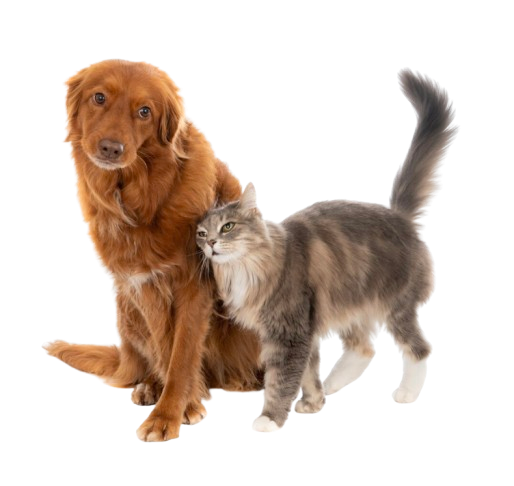

OUR PAWS

¡Adopta una mascota, cambia una vida!
En nuestro sitio, creemos que cada mascota merece un hogar lleno de amor. Aquí encontrarás
perros y
gatos de todas las edades y personalidades, esperando por esa familia especial que les dé una
segunda
oportunidad. Al adoptar, no solo estás brindando un refugio a un animal, también estás ganando
un
compañero leal que llenará tu vida de cariño y alegría.
Adoptar es un acto de amor que salva vidas. Cada vez que eliges adoptar, liberas espacio para
que otro
animal necesitado también reciba la ayuda que tanto merece. ¡Juntos podemos hacer la diferencia!
Visítanos y descubre cómo puedes cambiar el mundo, una mascota a la vez. ¡Tu nuevo mejor amigo
te está
esperando!